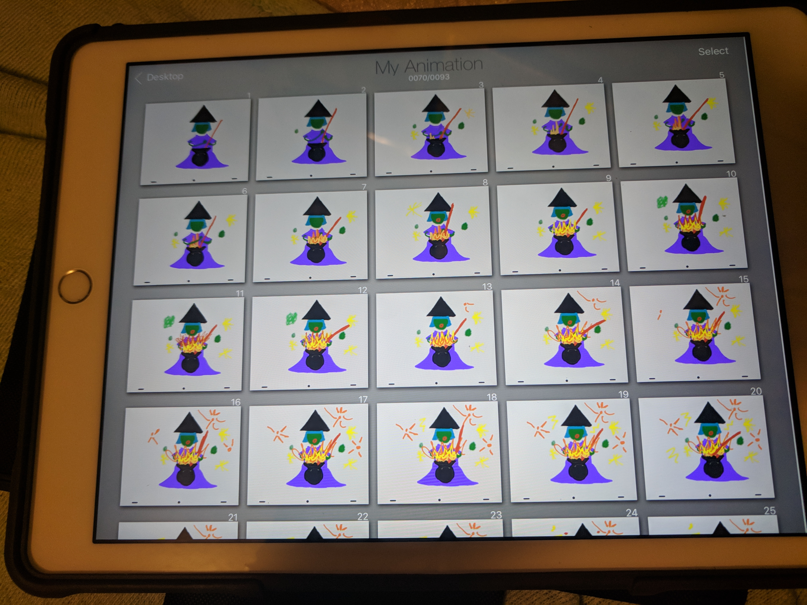
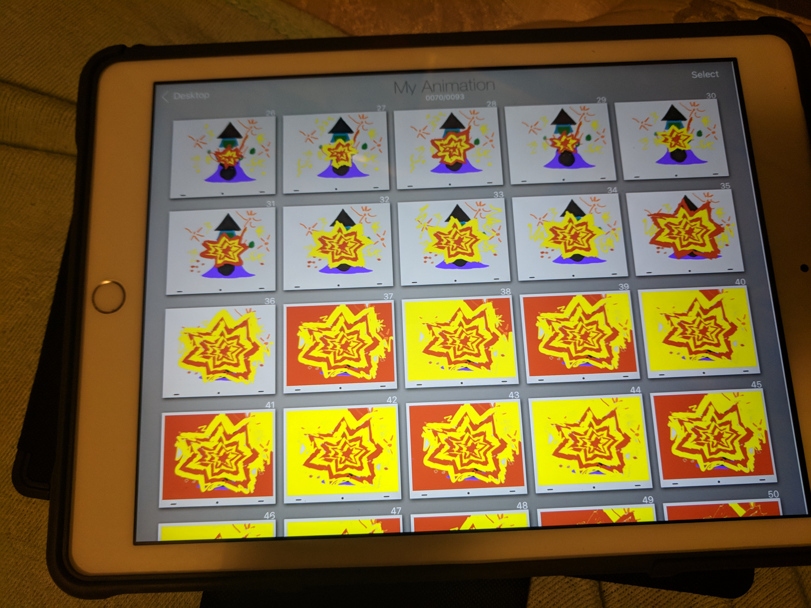
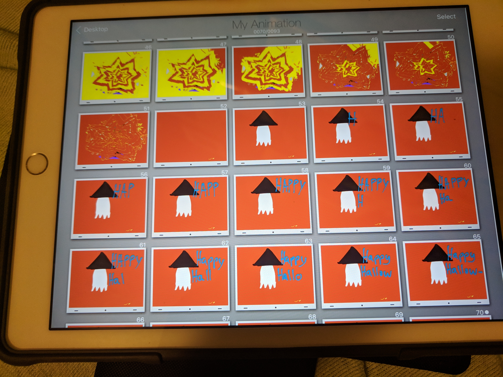
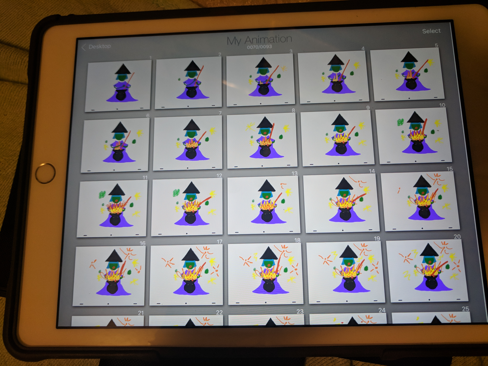
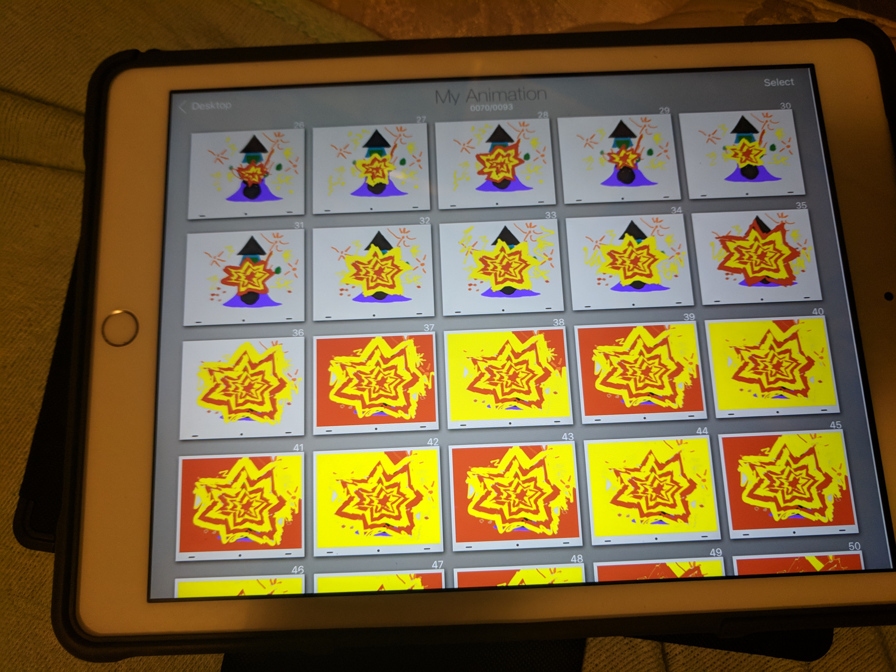
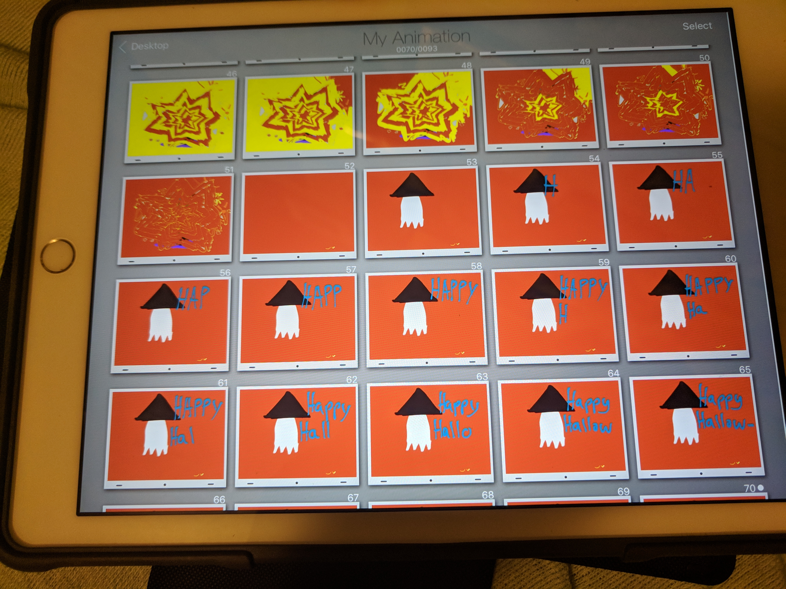

this is the first digital sketch I made. I realized that things are harder to create digitally with a wonky stylus and ipad than a pen and paper so my witch lost detail and my design became much more simplistic
For this assignment I animated an explosion. My explosion is created by a witch that has a mishap with her cauldron.
in this sketch I added lots of detail to the witch and had her reading from a spellbook. My ambitious plan was to have her flip the pages of the book
in this sketch I made my witch less detailed and zoomed out of the scene
this is the first digital sketch I made. I realized that things are harder to create digitally with a wonky stylus and ipad than a pen and paper so my witch lost detail and my design became much more simplistic
 




